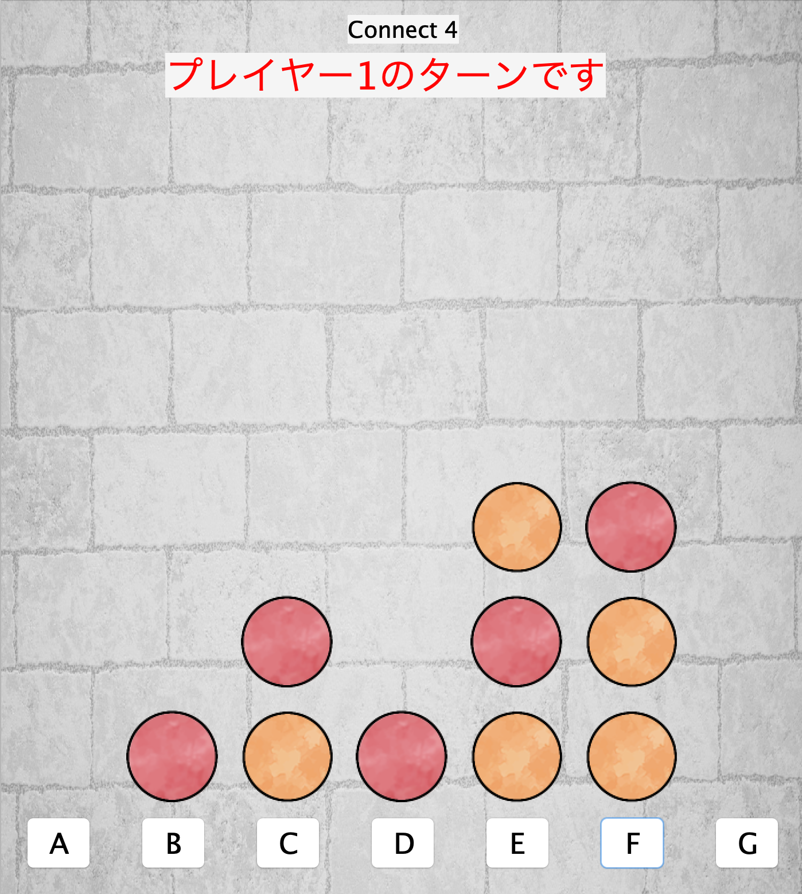
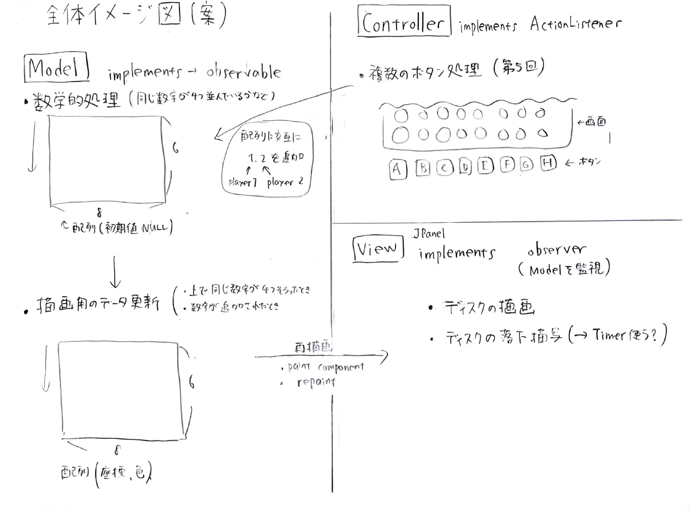
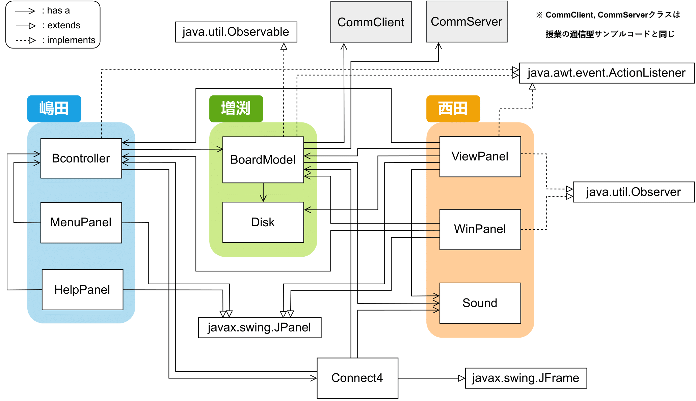
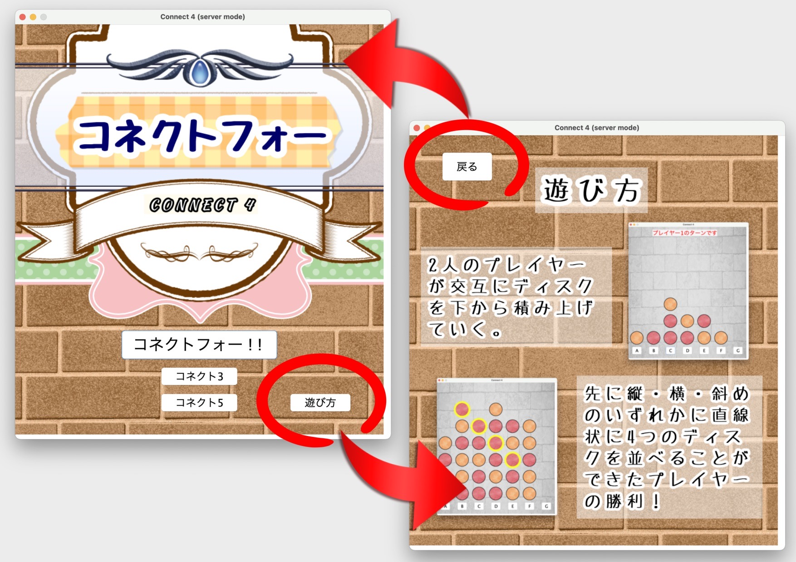
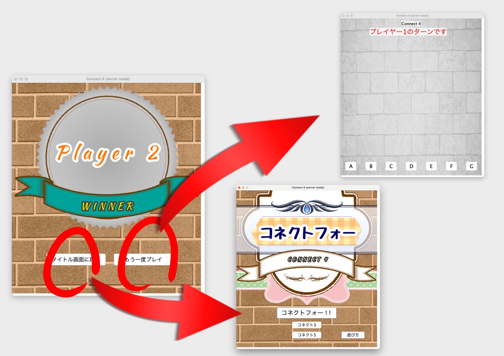

|
 |
コネクトフォーは2人のプレイヤーが交互に7×6の盤面にコマを下から積み重ね，先に縦・横・斜めのいずれかの形で直線状に4つ並べたプレイヤーが勝者となるゲームである．本プログラムではネットワークを利用した対人対戦が可能な通信機能に加え，ゲーム画面やホーム画面，結果画面，遊び方説明画面の画面遷移機能，BGM 機能を備えたコネクトフォーを実装した．3人のチームで開発を行い，言語はJavaを使用した．
役割分担
アーキテクチャパターンの一種であるMVCモデルを採用し，私はViewをを担当した．プログラムの共有はGoogle Driveを採用し，週ごとに全員のプログラムを格納するディレクトリを作成して管理した．プログラムの更新通知や他の役割への要望はLINEグループで行い，授業時間に加えてWeb会議サービスZoomを用いたオンライン会議を週一回のペースで実施した．
作業の進め方
まずMVCモデルに従った目標とするゲームの動作を図に書き出して全体のイメージをメンバー内で共有し，イメージ図からどのような機能をもつクラスを作成すればよいかを各々で考え，コーディング作業に移った．その後，授業内やオンライン会議内で進捗を共有し，それぞれのプログラムが相応に完成してからは主に統合やデバッグ作業を行った．ゲームとして機能する最低限のプログラムが完成してからは，各自でアニメーションや画面遷移などの要素を追加して機能を拡張していった． 
設計方針
このプログラムは，ゲーム画面上に表示されたボタンを押すことでデータが処理され，ゲーム画面の描画が行われる流れになっている．クラス図は下図のようになっている．私の担当部分は，オレンジ色に囲われた領域である． 
実行例
プログラムを実行するとタイトル画面が表示される．タイトル画面右下の「遊び方」をクリックすることで画面が切り替わり，このゲームの概要を確認することができる．その画面では左上にある「戻る」をクリックすることでメニュー画面へと戻ることができる．メニュー画面の中央付近にある「コネクトフォー！！」をクリックすることで通常モードのコネクトフォーを遊ぶことができ，「コネクト3」「コネクト5」では4つのディスクを直線上に並べる代わりにそれぞれ3つ, 5つのディスクを並べることが勝利条件となった特殊モードでプレイすることができる． 
プレイ画面は下図左のようになっている．ここではプレイヤー2人が画面下にある7つのボタンをクリックすることでディスクを交互に落としていく．「コネクトフォー！！」をクリックしてゲームを開始した場合，縦横斜めのいずれかに直線上にディスクを先に4つ並べた方のプレイヤーが勝者となる．勝敗が確定後に画面が切り替わり，「もう一度プレイ」をクリックすることで再戦することができ，「タイトルに戻る」をクリックすることでメニュー画面に戻る．
|  |